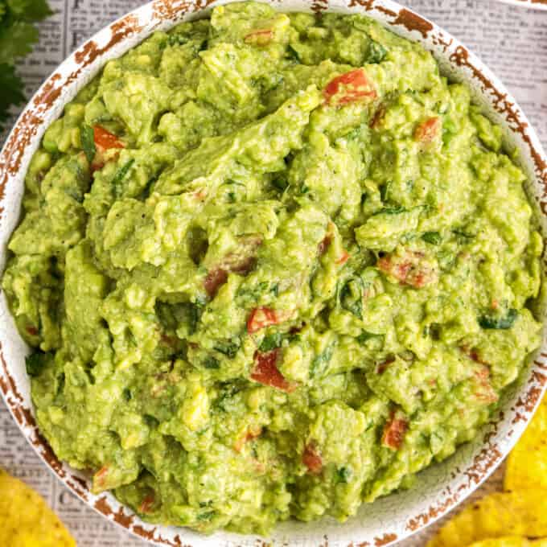

Guacamole

Description
We love avocados. Learn how to make guacamole here.
Ingredients
- Ripe Avocado
- Red Onion
- Tomato
- Lime Juice
- Salt
- (Optional) Herbs of Choice (e.g. cilantro)
Steps
- Remove avocado flesh and mash into a creamy consistency.
- Dice the tomato and red onion and add to the mashed avocado.
- Add a hefty dash of lime juice for flavor (and to preserve color).
- Add a pinch of salt and the herbs if desired, and mix.
- Enjoy!
Go back.